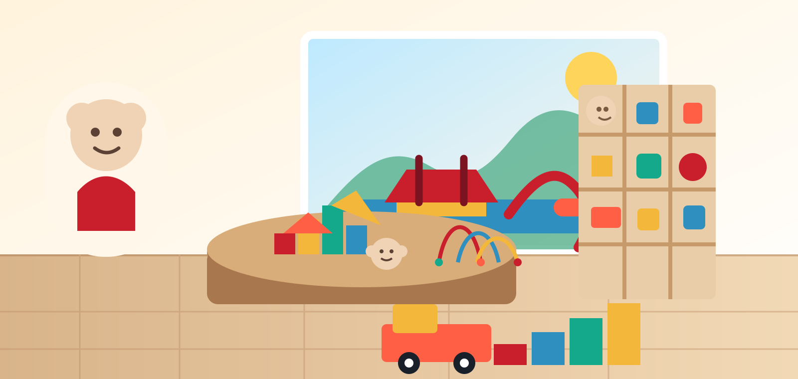

Une sélection pensée pour les enfants
L'entreprise s'est développée autour d'une idée simple : proposer des produits qui accompagnent l'éveil, le jeu, la créativité et les moments partagés en famille.

Distribution à l'île Maurice
Une large sélection de produits pour enfants, du premier âge aux grands espaces de jeu.
Bébé, éducatif, jeux, figurines, construction, télécommandé et loisirs actifs.
Des jouets en magasin jusqu'aux playgrounds et infrastructures sportives.
Accompagnement pour les commerces, écoles, hôtels, collectivités et espaces loisirs.
À propos
Lotus D'or est une entreprise mauricienne spécialisée dans la distribution de jouets, produits pour bébé, jeux éducatifs, loisirs pour enfants, playgrounds et infrastructures sportives. Son rôle est de rapprocher les familles, les revendeurs et les porteurs de projets d'une offre fiable, variée et adaptée au marché local.
L'entreprise s'est développée autour d'une idée simple : proposer des produits qui accompagnent l'éveil, le jeu, la créativité et les moments partagés en famille.
Au fil du temps, Lotus D'or a élargi ses gammes : produits bébé, jouets éducatifs, jeux de société, figurines, construction, véhicules télécommandés et nouveautés saisonnières.
Avec ses outlets et son expertise dans les playgrounds et infrastructures sportives, Lotus D'or accompagne aussi les écoles, hôtels, collectivités et espaces de loisirs à l'île Maurice.
Catalogue
Lotus D'or accompagne les revendeurs et porteurs de projets avec une offre pensée pour les familles, les écoles et les lieux recevant du public.
Articles pour le premier âge, éveil, confort et accessoires adaptés aux jeunes enfants.
Jeux d'apprentissage, motricité, logique, créativité et découverte par le jeu.
Jeux familiaux, stratégie, cartes, puzzles et activités pour moments partagés.
Figurines, construction, véhicules télécommandés, jeux d'imitation et nouveautés saisonnières.
Structures de jeu pour écoles, hôtels, résidences, collectivités et espaces récréatifs.
Solutions pour terrains, parcours, équipements sportifs et zones d'activité extérieure.
Marques
Lotus D'or met en avant une sélection de marques pour les bébés, les jouets éducatifs, les jeux, les loisirs et les projets playground. Cette section peut accueillir les logos officiels dès qu'ils sont prêts.
Univers de figurines, jeux d'imagination et coffrets thématiques pour enfants.
Jeux de construction, créativité, collections enfants et activités familiales.
Puzzles, jeux éducatifs et jeux de société pour apprendre et jouer ensemble.
Jeux de société, figurines, jeux d'action et classiques pour toute la famille.
Jouets emblématiques, véhicules, poupées, jeux et nouveautés pour enfants.
Jouets électroniques, éveil, apprentissage et produits éducatifs interactifs.
Produits
Cette zone se mettra à jour automatiquement avec les produits publiés depuis l'espace administrateur.
Les produits publiés dans l'espace admin apparaîtront ici.
Méthode
Que le besoin soit un rayon jouets, une salle d'activités ou un grand espace extérieur, Lotus D'or peut aider à composer une sélection cohérente selon l'âge, l'espace, le budget et l'usage prévu.
Public visé, espace disponible, fréquence d'utilisation et contraintes de sécurité.
Produits adaptés, volumes, catégories et options pour les projets standards ou sur mesure.
Accompagnement local pour faciliter l'approvisionnement et la mise en place.
Applications
Locations
Visitez l'outlet le plus pratique pour découvrir les produits disponibles et préparer vos achats ou vos projets d'équipement.
Accédez rapidement à l'itinéraire et aux informations du point de vente sur Google Maps.
Ouvrir dans Google MapsUn second point de vente pour retrouver les gammes jouets, bébé et loisirs enfants.
Ouvrir dans Google MapsUn troisième outlet pour vos demandes produits et projets playground ou infrastructures sportives.
Ouvrir dans Google MapsContact
Indiquez le type de produits recherchés, le volume souhaité ou le projet à équiper. Lotus D'or vous répondra avec une proposition adaptée.